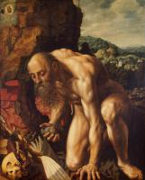
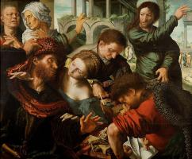

| Діва з немовлям під виноградною лозою
1528-29
|
 | Христос, що несе хрест
1533
|
 | Марнота
1535-40
|
 | Блудний син
1536
|
 | Юдита
1540
|
|  | Святий Ієронім
1543
|
|  | Покликання святого Матвія
1548
|
 | Святий Ієронім
1548
|
 | Марія Магдалина з лютнею
1550
|
 | Тобіас відновлює зір свого батька
1555
|
 | Притча про немилосердного слугу
1556
|
 | Наруга над Христом
1560
|
 | Оплакування Христа
|
| Діва з немовлям
| |
 | Ісаак благословляє Якова
|
 | Зняття з хреста
|
 | Святий Ієронім
|